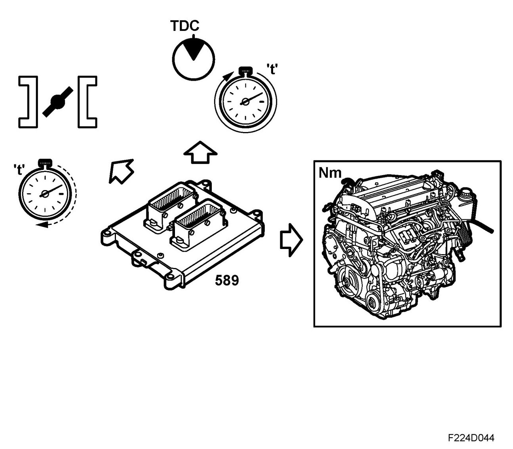
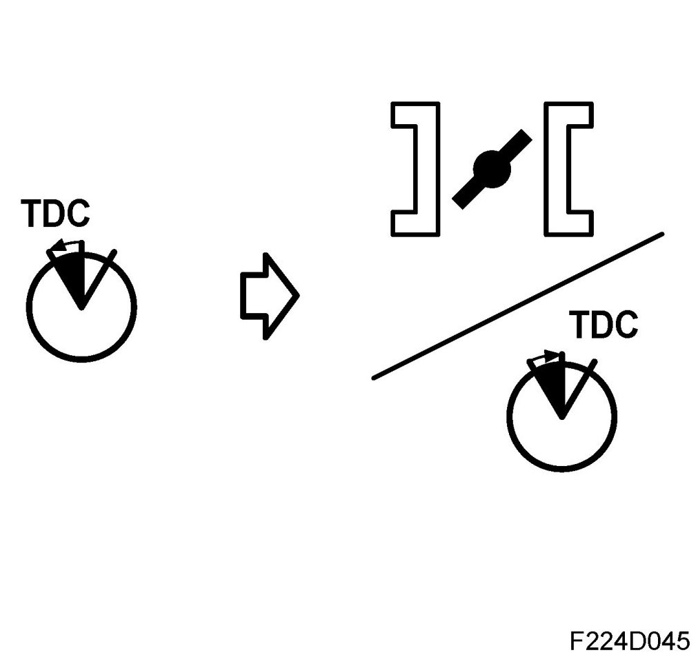
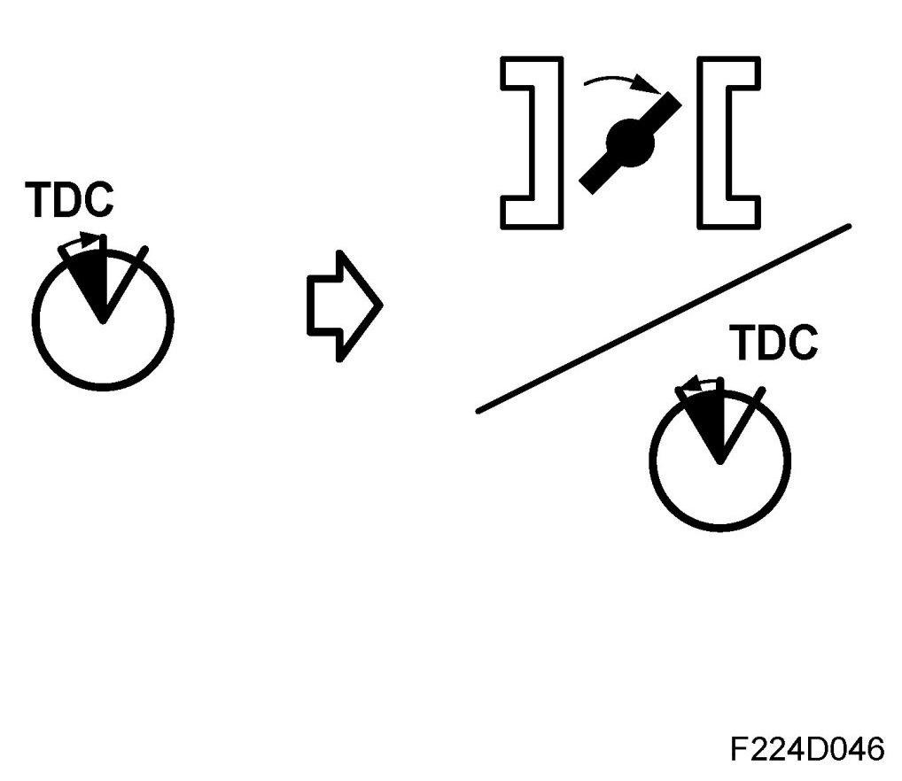
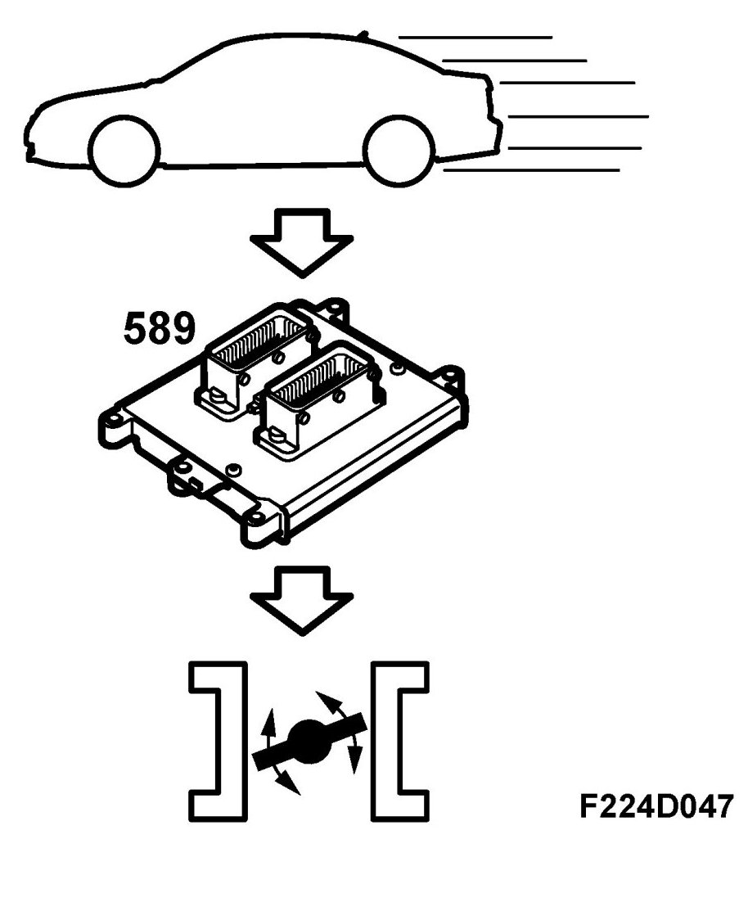
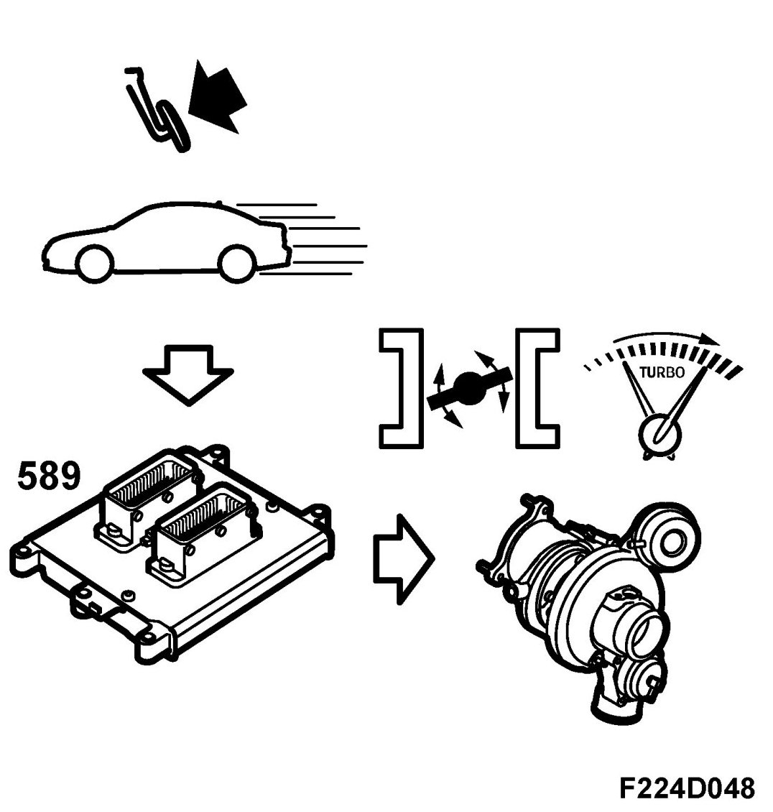

Engine Torque Control
Engine Torque Control
Engine torque control, general

Engine torque control is used to ensure the correct engine torque is supplied by the engine. ECM controls engine torque by regulating the air mass per combustion and also by regulating the ignition timing.
Generally, it can be said that engine torque control has one slow method of regulating torque, air mass control, and one fast method, ignition timing control.
Fast engine torque control, increasing load

The fast method of regulation is used when the engine load changes rapidly, e.g. idle when turning the steering wheel rapidly so that the power steering pump puts a load on the engine. The increased torque requirement from the engine must then be compensated by a rapid increase in engine torque or the idling speed will drop. This fast compensation is done using an advanced ignition, giving higher torque.
After the fast compensation, ECM will gradually increase the throttle area in order to get more air mass into the engine while the ignition is retarded slightly. This allows ECM to maintain a torque reserve so that it can again perform fast compensation for changed engine loads.
Fast engine torque control, reduced load

The opposite takes place when the load is quickly reduced, e.g. when turning off the A/C compressor. The engine will then produce a higher torque than is required to keep the engine running and its auxiliary equipment, i.e. generator, power steering pump and water pump. Unless the engine torque is quickly reduced, idling speed will rise above the nominal due to the engine producing "too much torque".
Engine torque is reduced by retarding the ignition slightly, which results in lower engine torque and restores the balance between the torque being produced and the torque being used.
Now, the engine will not be running with an optimal ignition timing with regard to fuel consumption and ECM will reduce the throttle area (less air mass to the engine) while the ignition will be advanced slightly.
Slow engine torque control

Slow engine torque control is used when driving under constant load, i.e. when the load does not vary or varies slowly. In this case, ECM operates mainly with throttle area to regulate the engine torque.
For higher torque requirements, turbo control will also be used to increase the air mass in the engine so that it produces the requested engine torque.
